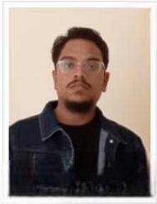

Rashid Portfolio
<!-- Google Fonts for style -->


  * { margin: 0; padding: 0; box-sizing: border-box; }
  body {
    background-color: #0d0d0d; /* Dark base */
    color: #ffffff;
    font-family: 'Roboto', sans-serif;
    line-height: 1.6;
    padding: 20px;
  }

  .container {
    max-width: 1200px;
    margin: auto;
  }

  /* Header with clean style */
  header {
    text-align: center;
    padding: 40px 20px;
    position: relative;
  }
  header h1 {
    font-family: 'Roboto', sans-serif;
    font-size: 3em;
    letter-spacing: 3px;
    margin-bottom: 10px;
    color: #00f9ff;
  }
  header p {
    font-size: 1.2em;
    font-style: italic;
    color: #ccc;
  }

  /* Profile section */
  .profile {
    display: flex;
    flex-direction: column;
    align-items: center;
    margin: 50px 0;
  }
  .profile-img {
    width: 180px;
    height: 180px;
    border-radius: 50%;
    border: 4px solid #00f9ff;
    object-fit: cover;
    box-shadow: 0 0 15px rgba(0,255,255,0.7);
  }
  .experience {
    max-width: 800px;
    text-align: center;
    margin-top: 20px;
    font-size: 1.2em;
    color: #ddd;
  }

  /* Sections styling - floating card style */
  section {
    margin: 60px 0;
  }
  section h2 {
    font-size: 2.2em;
    margin-bottom: 20px;
    color: #00f9ff;
    border-bottom: 2px solid #333;
    padding-bottom: 8px;
  }

  /* About section */
  .about {
    max-width: 900px;
    margin: 0 auto 20px auto;
    font-size: 1.1em;
    line-height: 1.6;
    padding: 15px 20px;
    background: #111;
    border-radius: 10px;
    box-shadow: 0 0 20px rgba(0,0,0,0.5);
  }

  /* Projects grid */
  .projects {
    display: flex;
    flex-wrap: wrap;
    justify-content: center;
    gap: 20px;
    margin-top: 20px;
  }
  .project-img {
    width: 220px;
    height: 140px;
    object-fit: cover;
    border-radius: 8px;
    border: 2px solid #333;
    box-shadow: 0 0 15px rgba(0,255,255,0.3);
    cursor: pointer;
    transition: transform 0.3s, box-shadow 0.3s, border-color 0.3s;
  }
  .project-img:hover {
    transform: scale(1.05);
    box-shadow: 0 0 25px rgba(0,255,255,0.6);
    border-color: #00f9ff;
  }

  /* Skills */
  .skills {
    display: flex;
    flex-wrap: wrap;
    justify-content: center;
    gap: 15px;
    margin-top: 20px;
  }
  .skill {
    background-color: #222;
    padding: 12px 20px;
    border-radius: 20px;
    font-size: 1.1em;
    border: 1px solid #444;
    transition: background-color 0.3s, transform 0.3s;
  }
  .skill:hover {
    background-color: #444;
    transform: translateY(-3px);
  }

  /* Experience &amp; Roles */
  .experience-details {
    max-width: 900px;
    margin: 0 auto;
    padding: 20px;
    background-color: #111;
    border-radius: 10px;
    box-shadow: 0 0 20px rgba(0,0,0,0.6);
  }
  .role {
    margin-bottom: 20px;
  }
  .role h3 {
    color: #00f9ff;
    margin-bottom: 8px;
  }

  /* Achievements */
  .achievements {
    max-width: 900px;
    margin: auto;
    padding: 15px 20px;
    background: #111;
    border-radius: 10px;
    box-shadow: 0 0 20px rgba(0,0,0,0.6);
  }
  .achievements li {
    margin-bottom: 10px;
    font-size: 1.1em;
  }

  /* Contact */
  .contact {
    text-align: center;
    margin: 40px 0;
  }
  .contact p {
    font-size: 1.2em;
    color: #ccc;
  }

  /* Footer */
  footer {
    text-align: center;
    padding: 30px 20px;
    font-size: 0.9em;
    color: #777;
    margin-top: 60px;
  }

  /* Responsive adjustments */
  @media(max-width: 768px) {
    header h1 {
      font-size: 2em;
    }
    .project-img {
      width: 160px;
      height: 110px;
    }
  }


<div class="container">
  <!-- Header -->
  <header>
    <h1>Rashid Portfolio</h1>
    <p>"Want to be a techyify builder"</p>
  </header>

  <!-- Profile &amp; Experience -->
  <div class="profile">
    
    <div class="experience">
      <p>11+ Years in Software Development | Recent Role: QA Automation Team Lead</p>
    </div>
  </div>

  <!-- About Me -->
  <section id="about">
    <h2>About Me</h2>
    <div class="about">
      <p>
        Hi, I'm Rashid! A passionate software developer with over a decade of experience, working with top-tier companies like Wipro and Microsoft. I specialize in automation, quality assurance, and full-stack development. My journey is driven by innovation, problem-solving, and delivering quality.
      </p>
    </div>
  </section>

  <!-- Skills &amp; Technologies -->
  <section id="skills">
    <h2>Skills &amp; Technologies</h2>
    <div class="skills">
	  <div class="skill">Python</div>
	  <div class="skill">Kubernetes</div>
      <div class="skill">APIs</div>
      <div class="skill">Azure DevOps</div>
      <div class="skill">Django</div>
      <div class="skill">Bootstrap</div>
      <div class="skill">Pandas &amp; Numpy</div>
      <div class="skill">QA Automation</div> 
    </div>
  </section>

  <!-- Sample Projects -->
  <section id="projects">
    <h2>Sample Projects</h2>
    <div class="projects">
      
      
      
    </div>
  </section>

  <!-- Professional Experience -->
  <section id="experience">
    <h2>Professional Experience</h2>
    <div class="experience-details">
      <div class="role">
        <h3>Wipro</h3>
        <p>Worked for 5 years, focusing on QA automation &amp; software solutions.</p>
      </div>
      <div class="role">
        <h3>Contract with Microsoft</h3>
        <p>Contributed to enterprise projects, specializing in automation frameworks and quality assurance.</p>
      </div>
      <div class="role">
        <h3>Recent Role</h3>
        <p>QA Automation Team Lead, leading automation strategies and managing a team of QA engineers.</p>
      </div>
    </div>
  </section>

  <!-- Achievements &amp; Awards -->
  <section id="awards">
    <h2>Achievements &amp; Awards</h2>
    <ul class="achievements">
      <li>Employee of the Year at Wipro (2019)</li>
      <li>Best Automation Framework Award (2021)</li>
      <li>Certification in Selenium &amp; Automation Testing</li>
      <li>Active contributor to open-source QA tools</li>
    </ul>
  </section>

  <!-- Contact -->
  <section class="contact" id="contact">
    <h2>Contact Me</h2>
    <p>Email: rashid.alam.netcore@gmail.com | Phone: +91 8655707563</p>
    <p>LinkedIn: linkedin.com/in/rashid-alam-51a6aa79/</p>
  </section>

  <!-- Footer -->
  <footer>
    &copy; 2025 Rashid. All rights reserved.
  </footer>
</div>